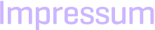

ANTS with FRIENDS
Ralph Möcklinghoff, Andreas Popp, Tobias Worzyk
Immenhof 35
22087 Hamburg
Tel.: +49 (151) 22 63 03 32
E-Mail: info@antswithfriends.net
Inhaltlich Verantwortliche gemäß §6 TDG, §10 MDStV:
Ralph Möcklinghoff, Andreas Popp und Tobias Worzyk (Anschrift wie oben)
Falls Sie ein rechtliches oder anders geartetes Problem mit diesen Seiten haben, dann melden Sie sich bitte.
Haftungshinweis: Trotz sorgfältiger inhaltlicher Kontrolle übernehmen wir keine Haftung für die Inhalte externer Links. Für den Inhalt der verlinkten Seiten sind ausschließlich deren Betreiber verantwortlich.
Der Inhalt dieser Website ist unter einer Creative Commons-Lizenz lizenziert.